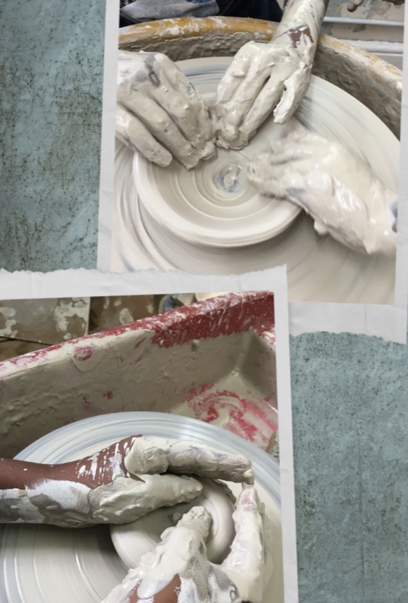
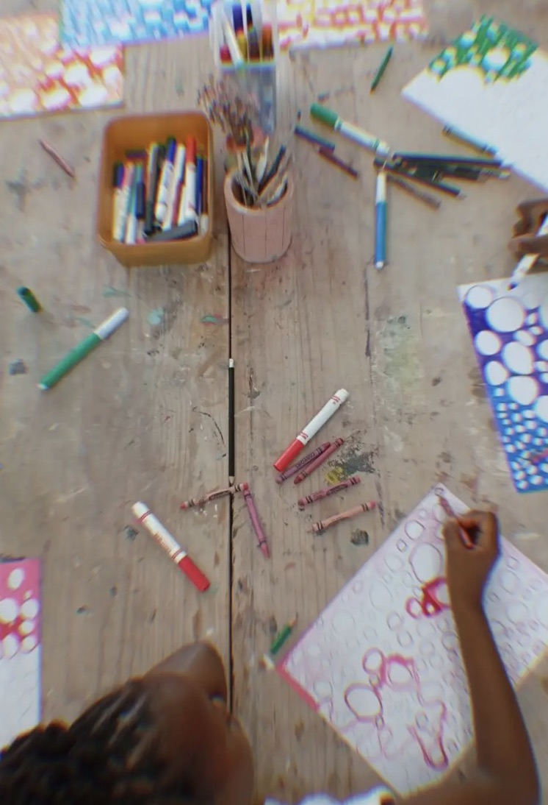
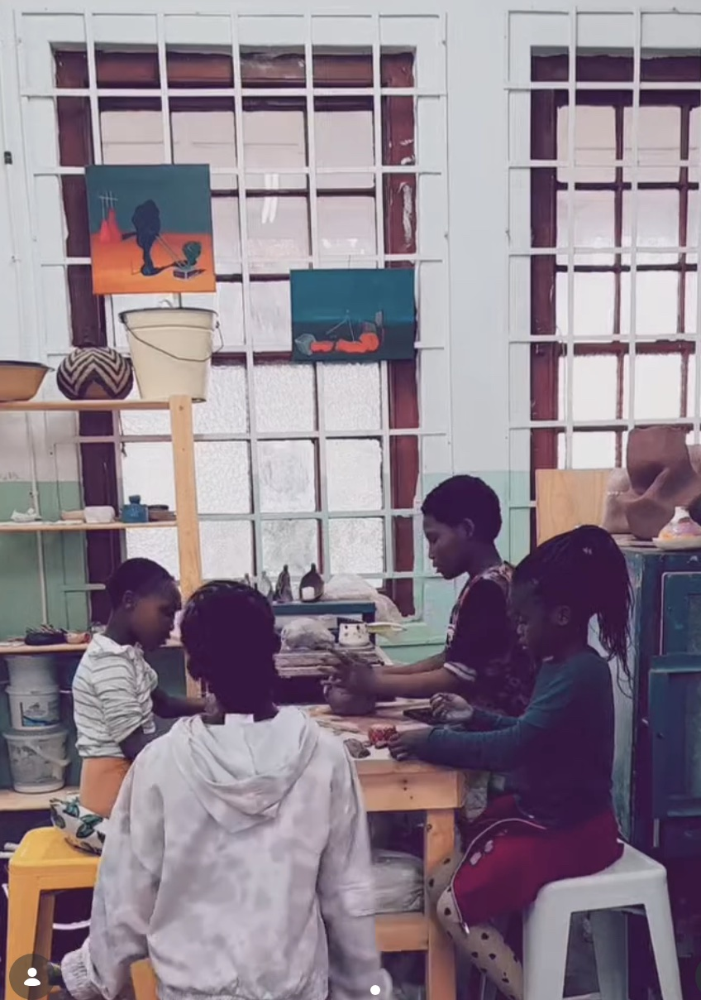

Ceramics & clay
Hand-build, sculpt and paint with clay, turning ideas into objects.
Children explore natural clay through shaping, decorating and making objects inspired by their own ideas and stories.

Activities
Children learn by doing: exploring materials, practising new skills, making stories and working through ideas together.
Explore through making
Hand-build, sculpt and paint with clay, turning ideas into objects.
Children explore natural clay through shaping, decorating and making objects inspired by their own ideas and stories.

Plant, tend, harvest and learn about soil, food and how living things grow.
From vertical gardens to seedlings, children learn by caring for plants and sharing the work of growing food.

Use color and mark-making to share ideas, feelings and observations.
Children experiment with drawing materials, paint and colours made from the earth, then follow their own ideas onto the page.

Create characters, tell stories, move, speak and listen together.
Stories, language, song and clay help children share ideas, listen to each other and bring imagination into the room.

With tools and materials available, children can choose a direction, test ideas and solve problems together.
Open studio time gives children room to follow their curiosity, work at their own pace and learn from one another.

Visits and trips help children meet new places, people, materials and ways of working.
Gallery, garden, factory and community visits connect studio learning with the people and places around them.

Hover over or keyboard-focus an activity to see a photo and more details. On touch screens, photos and details are shown automatically.
Recent projects
Browse dated stories, visits and photos from the children’s recent projects.
Make space for more discovery
Meet the people and places that make new experiences possible.
Meet our partnersSupport Us · Contact Us
Help sustain a safe, creative space for children in Langa. Financial contributions, useful materials, caring expertise and your time all make a difference.
Explore ways to supportAsk what is most useful right now or share an idea for getting involved. She will coordinate the details with you by email or phone.